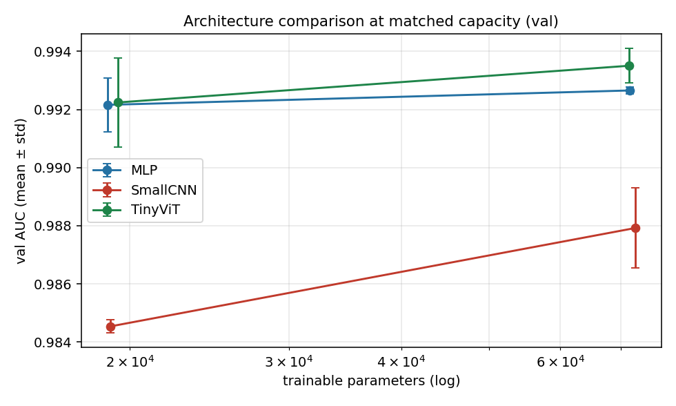
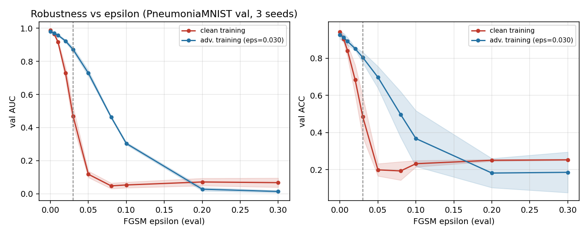

这不是一份教程，是一份复盘：我跑了什么、每个模型在干什么、数字是怎么来的，以及这些实验和我笔记里的哪几章对上了。
先给结论，后面再拆。
我训练了一个能看胸片判断「有没有肺炎」的小模型，然后用 46 组对照实验回答三个问题：调参能不能稳定提升？提升是旋钮给的还是结构给的？一个看起来 98.9 分的模型有多脆？
把它拆成三句人话：
从「有个想法」到「能当场演示」，中间是这四段。
选数据集、定主指标（AUC，不是准确率）、定纪律（验证集调参、测试集只评一次、3 个种子）。这一步看着最不「技术」，但它决定了后面所有数字能不能信。
产出：configs/base.yaml、流程图 docs/pipeline.svg
写了 20 个 Python 模块：数据加载、模型、训练循环、评估、扫描、复跑、出图、归档。任何一个实验都是「改一个 yaml + 跑一条命令」，结果自动追加到 CSV，每行带代码版本和时间戳。
产出：src/ 20 个模块、results/runs.csv
先一次只改一个超参、扫 33 组，看谁敏感；再用 4 组小网格看两个超参的交互；最后把 base 和最优配置各跑 3 个种子，判断提升是不是真的。
产出：runs.csv（33 行）、grid.csv（4 行）、repeats.csv（9 行）
用最终配置在测试集上评一次（0.9546），然后不再碰它。接着做了六组延伸实验：结构对照、FGSM 攻击、对抗训练、Grad-CAM、剪枝与蒸馏、先验拆解，外加一次「容量对齐」的自我复核。
产出：figures/ 10 张图、docs/EXTENSIONS.md、15 页答辩 PPT
这是整个项目里我最想讲清楚的一段——三种结构差的不是「谁更高级」，而是「信息在什么尺度上被混在一起」。
原理（人话）：把 28×28 的图拉成一根 784 长的向量，乘一个大矩阵、加偏置、过激活函数，就得到 2 个分数。它不知道「相邻像素更相关」，也不知道「图像可以平移」。
在项目里的作用：当「结构对照的下界」。如果一个毫无图像先验的模型都能到 0.99，说明这个任务的信息量其实很低维。
结果：100,738 个参数，验证 AUC 0.9928，比精心调过的 CNN 还高。
为什么？因为「整片肺野的弥漫性浸润」本来就是个全局统计量。把全图摊平一次加权，恰好就是在算全局量。这是这个项目里第一个反直觉发现。
原理（人话）：用 3×3 的小窗口在图上滑动，每个位置算一个加权和（卷积），得到一张「特征图」；再抽稀（池化）、归一化（BN）、激活，堆两层。它的核心假设是局部的东西长得像——同一个纹理出现在左上和右下，应该被同一组权重识别。
在项目里的作用：主实验的载体。33 组调参全在它身上做，因为笔记里的「基础预测模型」就是它。
结果：宽度 32 时 19,042 参数、AUC 0.9845；宽度 64 时 74,946 参数、AUC 0.9886（+0.0041，约 19 倍种子波动）。
它的短板很有意思：两层 3×3 卷积只叠出 9×9 的感受野，连整幅图的 1/9 都不到。想靠「加宽」补，加到最后还是不如能看全图的结构——这是第 5 节「容量对齐」要证的。
原理（人话）：把 28×28 切成 7×7 个 4×4 的小块（patch），每块压成一个向量，再加一个专门用来「汇总」的 cls token；然后做自注意力——每一块都去问其他所有块「你和我有关系吗」，按相关程度加权求和。堆两层，最后用 cls token 分类。
在项目里的作用：回答笔记里那句「注意力到底行不行」。我把它压到和 CNN 几乎一样的参数量（71,554 vs 74,946），这样比较才公平。
结果：验证 AUC 0.9935，比 CNN 高 0.0049；代价是训练慢 2 倍（2.4 min vs 1.2 min），因为注意力是「两两配对」的，复杂度随 token 数平方增长。
但先别急着下结论。这三组参数量分别是 10 万、7.5 万、7.1 万，并不齐。「ViT 赢」可能只是它恰好落在容量甜点上。所以第 5 节我把三者压到同一参数量又比了一次——结论改了一半。
模型只是骨架，真正让它学起来的是这些小零件。每个都用一个比喻讲清，再给它在项目里的实测表现。
| 零件 | 通俗解释 | 在项目里干什么 | 实测表现 |
|---|---|---|---|
| 交叉熵损失 | 猜错了扣多少分。模型越自信地猜错，扣得越狠。 | 唯一的优化目标；训练全程都在最小化它。 | 训练 loss 从 0.80 一路降到 0.1 以下，然后开始平台。 |
| Adam 优化器 | 给每个参数配一个「私人助教」，各自决定步子迈多大。 | 主配置用它；和 SGD 做对照。 | 20 轮预算下 SGD 只有 0.9642，比 Adam 低约 2 个点。 |
| 学习率 | 一次走多远。太小走不动，太大跨过谷底。 | 敏感性扫描的第一名。 | 从 1e-4 到 1e-2 的极差 0.0220，是全项目最敏感的旋钮。 |
| BatchNorm | 每层后面装一个「稳压器」，把数值拉回正常范围。 | 默认开启，另跑一组关掉做对照。 | 去掉后掉 1.9 个百分点——属于「必须有」，不是「可以调」。 |
| Dropout / 权重衰减 | 训练时随机「断电」一部分神经元，逼模型别只靠少数几条路。 | 各扫了几档，属于「不敏感区」。 | 极差都不超过 0.0062，调它们不如调学习率。 |
| 早停 + 选最优轮 | 考试取最好那次成绩，而不是最后一次。 | 验证 AUC 不再涨就停；权重按最高分那一轮存。 | 第 20 轮 0.9837 已低于第 19 轮 0.9890，差 0.0053。 |
| 随机种子 | 洗牌前把顺序定死，别人才能复现你这一局。 | Python / NumPy / PyTorch 三处都设。 | 13 次等价 base 复现到小数点后六位（0.984404）。 |
| 数据增强 | 把图翻一翻、转一转，人为造点新样本。 | 翻转到保留，旋转做对照。 | 翻转无害；旋转反而更差（0.9821），因为把肺野转出画布了。 |
「极差」= 这一组里最好与最差的差值，单位是 AUC。只有极差明显大于种子波动，才值得继续调。
主实验只回答了「调参有没有用」。剩下六个问题，是我在笔记里看到、但没跑过的。
做法：给定目标参数量，反解每个结构的「宽度旋钮」，把 MLP、CNN、ViT 压到 1.9 万和 7.2 万两档，各跑 3 个种子。
结果：1.9 万档 MLP 0.9922 / CNN 0.9845 / ViT 0.9922；7.2 万档 0.9927 / 0.9879 / 0.9935。
结论：CNN 落后是真的、加参数救不回来；但 ViT 并没有赢 MLP，差 0.00008～0.00085，落在种子波动里。
做法：顺着「让模型更错」的方向，给每个像素加一小步，ε 从 0 扫到 0.3。
结果：ε=0.03 时 AUC 从 0.9890 掉到 0.4501——比瞎猜还差；ε≥0.05 直接「全判正常」。
结论：98.9 分只在「图没被动过」的前提下成立。
做法：训练时每个 batch 抽一半样本先做 FGSM 扰动，再和干净样本一起学。
结果：ε=0.03 处 AUC 0.4678 → 0.8711，崩溃被填回 79%；代价是干净 AUC 掉 0.0081。
结论：不是免费午餐，而且只护住「同强度」的扰动，ε≥0.2 还是崩。
做法：拿最后一层卷积的梯度当权重，给特征图加权，再上采样回 28×28 看热区。
结果：边框区域响应占比 0.382，而边框面积占 0.490 → 富集 0.78 倍。
结论：没有靠黑边作弊，注意力落在肺野；但「小于 1」也说明它确实偏中央。
做法：按权重绝对值剪掉 50% / 80% / 90% 再微调 3 轮；另让大模型当老师、教一个小模型（温度 T=1/4/8）。
结果：剪 50% 只掉 0.005，剪 80% 掉到 0.9720；而从零训一个更小的 w16 反而有 0.9791。蒸馏三个温度全部没赢。
结论：「剪大的」不如「直接训小的」；师生只差 0.01 时，软标签里没东西可教。
做法：把验证集的阳性比例强行调到测试集的 62.5%，重采样 200 次，看准确率掉多少。
结果：0.9523 → 0.9399（只掉 0.0124）→ 真实测试 0.8349。
结论：先验只解释 11% 的落差，剩下 89% 是真实的分布偏移。


如果只记六句话，记这六句。
分三层：手上的、脑子里的、嘴上的。
笔记共 16 个模块（C1–C16），这个项目实际落地了 11 个，3 个给出了边界条件，5 个明确没做并说明理由。
| 章节 | 笔记讲什么 | 项目里怎么用 | 结果 / 是否改写 |
|---|---|---|---|
| C1 | 机器学习到底在干什么 | 双损失诊断、早停取最佳轮、测试集只评一次 | 验证 loss 第 18 轮后回升 → 取第 19 轮；测试记录只有 1 行 |
| C2 | 训练不动怎么办 | 学习率、优化器、BN、学习率排程四个主旋钮 | 极差 0.0220 / 0.0204 / 0.0186；无 BN 掉 1.9 点 |
| C3 | 卷积为什么省参数 | 宽度与池化两组实验；手算参数量对账 | 部分改写：手算 19,042 对上了，但「不池化更好」被实测否定（0.9782） |
| C4 | 自注意力：每个词问所有词 | 自建 TinyViT，第一层就是 patch 之间互相问 | ViT 0.9935 高于 CNN 0.9886；但和 MLP 打平 |
| C5 | Transformer：把注意力堆成机器 | patch embed + cls token + 2 层 pre-norm + FFN | 落地；平方复杂度体现在训练时间是 CNN 的 2 倍 |
| C9 | 对抗攻击 | FGSM 的 ε 曲线（笔记「五件动手的事」第 3 件） | ε=0.03 掉到 0.45；又补了对抗训练把它拉回 0.87 |
| C10 | 可解释性 | 用 hook 手写 Grad-CAM，量化「边框富集度」 | 0.78 倍，注意力偏肺野；顺手踩了一个「尺度没对齐」的坑 |
| C11 | 领域自适应 | 先验对齐 + 200 次自助重采样 | 先验只解释 11%，89% 是分布偏移 |
| C14 | 网络压缩 | 剪枝 50/80/90% + 蒸馏 T=1/4/8 | 两个负结果：剪大的不如训小的；蒸馏没赢 |
| C16 | 结语：把十五个模块串成一张图 | 用流程图把「数据 → 模型 → 训练 → 评估 → 归档」串起来 | 流程图就是这张图的工程版 |
| C6 / C7 / C8 | 生成 / 自监督 / 自编码器 | 没做：4.7k 张图，生成样本和预训练都占不到便宜 | 写进「局限」，不硬凑 |
| C12 / C13 / C15 | 强化学习 / 终身学习 / 元学习 | 没做：分类任务没有序列决策、没有 few-shot 设定；C13 留了迁移实验的设计 | 答辩时直接说「没做，理由是……」 |
笔记订正版说医学影像的微小结节会被池化丢掉。我直接把池化全去掉，结果从 0.9845 掉到 0.9782。
正确的说法应该是「别堆池化」，而不是「不用池化」——留一次 2×2 反而起了轻量正则的作用。
翻转 + 旋转 10° 让 AUC 从 0.9851 掉到 0.9821。原因是旋转把肺野推到画布外，还引入了黑边填充——这是分布外变换。
最后只留水平翻转：增强必须保持标签语义和数据分布。
ViT 确实比 CNN 高 0.0049，但容量对齐后它和 MLP 打平（差 0.00008）。
准确的表述是「全局混合 > 局部卷积，注意力的额外贡献不显著」。
一句话：一套能重跑的代码、一张能查的结果表、一组能讲的图，和几份能交的文档。
个 Python 模块：数据、模型、训练、评估、扫描、复跑、出图、分析、归档，外加 6 个延伸实验脚本
个 CSV：单因子扫描、网格、三个种子、结构、容量对齐、攻击、对抗训练、剪枝蒸馏、最终测试
张图：敏感性、前后对比、ROC、混淆矩阵、预测样例、loss 曲线、Grad-CAM、FGSM、对抗训练、容量曲线
份 Markdown：实验报告、实验日志、踩坑清单（16 条）、学习复盘、延伸实验、答辩问答、预演稿等
页 PPT：从三件套对照讲到两组延伸实验，含现场演示脚本
条命令：python -m src.run --config configs/best.yaml，10 秒到 3 分钟就能重跑出同样的数字
| 目录 | 内容 |
|---|---|
src/ | 20 个模块，全部可单独运行；python -m src.xxx 即可 |
configs/ | 5 份配置：基线、扫描空间、最优、ViT、对抗训练 |
results/ | 11 个 CSV，每行带 git_commit 与时间戳，失败组也保留 |
figures/ | 10 张图，全部由 CSV 现场生成，没有手工截图 |
docs/ | 报告、日志、踩坑、复盘、延伸实验、答辩问答、预演稿、流程图 |
notebooks/ | 单图推理演示 |
两条纪律写在最前面：所有调参只看 524 张验证集；624 张测试集只在最后评一次（AUC 0.9546 / ACC 0.8349），之后无论多想知道「另一个配置会不会更好」，都不再碰它。